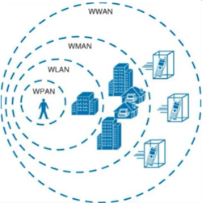

WWAN
Una Red de Área Amplia Inalámbrica (WWAN)es una tecnología de red que permite la conexión inalámbrica de dispositivos móviles, como teléfonos inteligentes, tabletas y laptops equipados con tarjetas SIM, a internet desde cualquier lugar con cobertura celular. Funciona utilizando la red de telefonía móvil operada por compañías como Claro, Movistar, etc.
